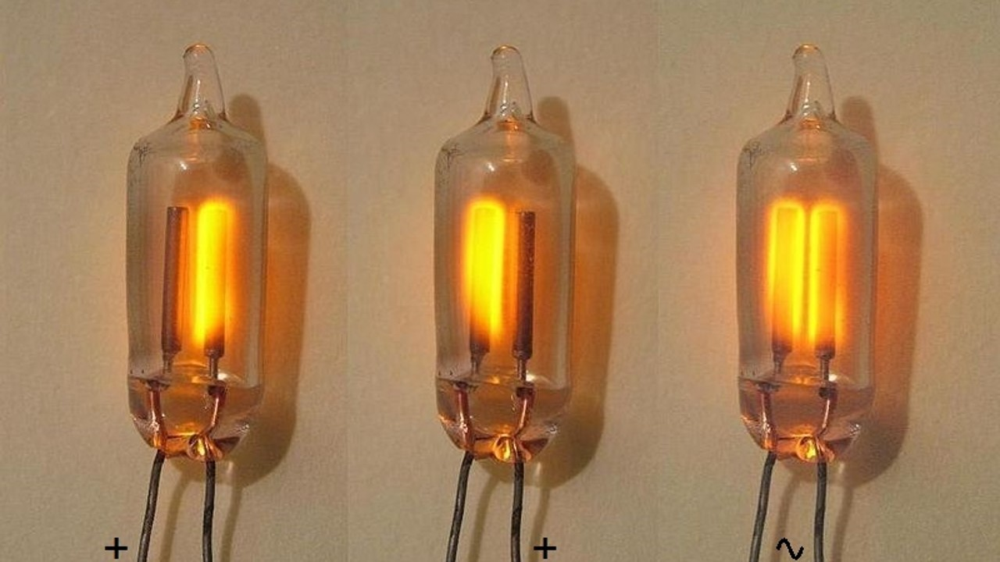

Godina: 1893.
Neonska svjetiljka (također neonska žarulja) minijaturna je žarulja za pražnjenje plina. Svjetiljka se obično sastoji od male staklene kapsule koja sadrži mješavinu neona i drugih plinova pod niskim tlakom i dvije elektrode (anoda i katoda). Kad se primijeni dovoljan napon i dostavi dovoljna struja između elektroda, svjetiljka proizvodi narančasto sjajno pražnjenje. Užareni dio svjetiljke tanko je područje u blizini katode. Neonske žarulje široko su se koristile kao indikatorske žarulje na zaslonima elektroničkih instrumenata i uređaja. Još se uvijek koriste zbog svoje električne jednostavnosti u visokonaponskim krugovima. Tesla nije izumio neonsko ili fluorescentno svjetlo, ali ih je poboljšao. Stvorio je prvi neonski znak i na svjetskom sajmu u Chicagu 1893. održao demonstraciju neonskih svjetlosnih znakova.